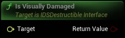

Should the instance reappear once the destructible is removed from the world. ie if the destructible isn't visually damaged enough.
|
Target
IDSDestructible Interface Interface
|
|
Return Value
Boolean
|
Should the instance reappear once the destructible is removed from the world. ie if the destructible isn't visually damaged enough. |